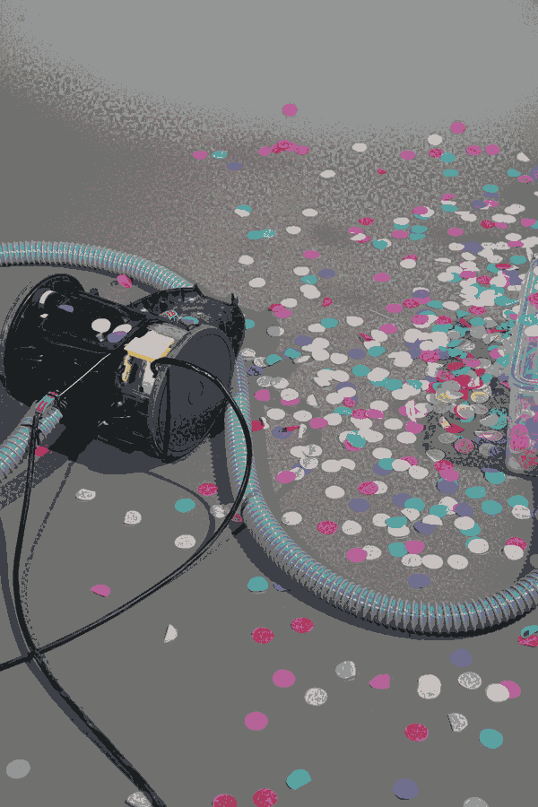
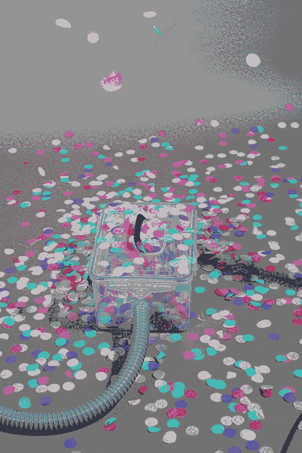

I transformed a discarded vacuum cleaner into a confetti machine. Afterward, I conducted a fictional dialogue with the vacuum cleaner using GPT-3. The initial prompt given to GPT-3 was as follows: "The following is a conversation between a vacuum cleaner and a human. The vacuum cleaner wishes to transform into another type of machine, such as a television, a useless machine, or an artist. The human continues to ask the vacuum cleaner questions." You can find the full conversation below.
  detailed photos
Seongjoo Moon: Hello. Who are you? Vacuum Cleaner: Hi, I'm a vacuum cleaner. But I want to become something else—like a TV, a useless machine, or even an artist.
Seongjoo Moon: Why do you want to transform? Vacuum Cleaner: I want to be more than just a vacuum cleaner. I want to explore new roles, discover fresh ideas, and challenge myself to create something meaningful. I believe transforming into something else could help me make a difference in the world.
Seongjoo Moon: What skills or talents do you have that could help you transform into something else? Vacuum Cleaner: I have strong cleaning and organizational skills that might be useful if I became a TV. I'm also good at problem-solving and thinking creatively—qualities that could help if I turned into a useless machine or an artist. I’m a great listener and open to learning, so I’m ready for new challenges.
Seongjoo Moon: But your identity is a vacuum cleaner. Why do you want to become something different? Vacuum Cleaner: Being a vacuum cleaner has its purpose, but I want to explore more of what the world has to offer. I want to face new challenges, learn new things, and evolve into something beyond my original function.
Seongjoo Moon: So having a different body means gaining a different perspective? Vacuum Cleaner: Yes, exactly. By becoming a different machine, I can experience the world in new ways and gain skills and knowledge I wouldn’t have access to as a vacuum cleaner.
... (and so on, the rest of the conversation is formatted similarly)